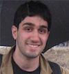
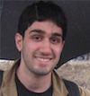
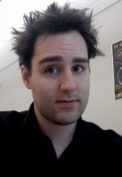
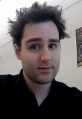

|
|
Active
Alumni
| Faculty
| Jens Wawerla | Denso, Germany | 2015
|
| PhD
| Shokoofeh Pourmehr | AutoX (startup), San Jose | 2017
| | Mani Monajjemi | Apple, Cupertino | 2016
| | Seyed Abbas Sadat | Bosch, Palo Alto | 2016
| | Jens Wawerla | Denso, Germany | 2010
| | Yaroslav Litus | Google, Seattle | 2010
| | MSc
| Jacob Perron | Open Robotics, Mountain View | 2018
|
|---|
| Lingkang Zhang | Inspired Robotics (startup), Vancouver | 2017
|
|---|
| Jake Bruce | Queensland University of Technology, Brisbane | 2015
|
|---|
| Brian Milligan | Big Park Studios, Vancouver | 2012
|
|---|
| Louis Saint-Raymond | EPFL, Lausanne | 2012
|
|---|
| Pante a Jabbari | Fortinet, Vancouver | 2011
| | Alex Couture-Beil | Activision | Blizzard, Vancouver | 2010
| | Adam Lein | Google, Mountain View | 2010
| | Pooya Karimian | Facebook, Menlo Park | 2007
| | Sarah Brown | Mintec, Vancouver | 2007
| | Pawel Zebrowski | InfoMine, Vancouver | 2007
| | Yinan Zhang | $(STARTUP), Vancouver | 2006
| | Roozbeh Mottaghi | Postdoc Stanford, PhD UCLA 2013 | 2006
| | Mauricio Zuluaga | Google, Zurich | 2005
| | BSc/BEng | Lilly Lee | University of Toronto | 2016
|
|---|
| Kush Chhatbar | Home Depot | 2016
|
|---|
| Kyle Chutskoff | | 2013
|
|---|
| Damir Jungic | Canadian Security Intelligence Service, Ottawa | 2013
|
|---|
| Zhao Song | PhD student, University of Texas, Austin | 2013
|
|---|
| Alexander Taggart | | 2012
|
|---|
| Lorin Beer | NSERC USRA | 2011
|
|---|
| Will Storey | | 2011
| | Peter Neufeld | | 2011
| | Ben Saunders | | 2011
| | Jeremy Asher | Co-op intern | 2008
| | Pouya Alagheband | NSERC USRA | 2006
| | Jeremy Holman | NSERC USRA | 2005
| | Pouya Bastani | NSERC USRA | 2004
| | Raj Nallapothola | | 2004
|
|


 


 



|
|